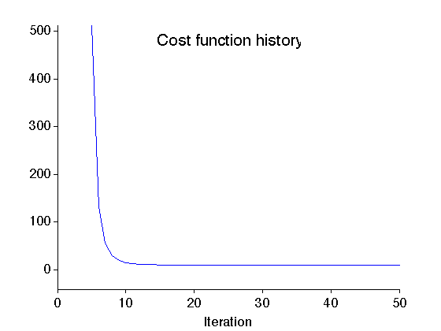

Example: Basis pursuit denoising (BPD)
In this example, a noisy speech waveform is denoised using basis pursuit denoising (BPD) and an oversampled DFT.
Ivan Selesnick NYU-Poly selesi@poly.edu March 2012
Contents
Start
close all clear MyGraphPrefsON printme = @(txt) print('-deps', sprintf('figures/Example_BPD_%s',txt)); randn('state',0); % set state so as to exactly reproduce example
Load signal
Load speech waveform data
[sp1, fs] = wavread('data/sp1.wav'); M = 500; % M : length of signal s = sp1(5500+(1:M)); % s : signal (without noise) figure(1) clf subplot(2,1,1) plot(s) box off title('Speech waveform') fprintf('Sampling rate: %d samples/second \n', fs)
Sampling rate: 16000 samples/second
Make noisy signal
Make noisy signal by adding white Gaussian noise
w = 0.1 * randn(M,1); % w : zero-mean Gaussian noise y = s + w; % y : noisy speech signal figure(2) clf subplot(2,1,1) plot(y) box off ylim1 = [-0.5 0.7]; ylim(ylim1); mytitle('Noisy signal'); xlabel('Time (samples)') printme('noisy')
Spectrum of noisy signal
Compute the spectrum of the noisy signal 'y' using the oversampled DFT.
N = 2^10; % N : Length of Fourier coefficient vector Y = (1/N)*fft(y,N); % Y : Spectrum of noisy signal figure(1) clf subplot(2,1,1) plot(abs(Y)) xlim([0 N/2]) box off mytitle('(A) Fourier coefficients (FFT) of noisy signal'); xlabel('Frequency (index)') printme('noisy_spectrum')
Basis pursuit denoising
Perform basis pursuit denoising using iteratitive algorithm.
% Define functions (Matlab function handles) H = @(x) A(x,M,N); % H : converts coefficients to signal HT = @(x) AT(x,M,N); % HT : converts signal to coefficients p = N; % p : Parseval constant H*HT = p*Identity % Define algorithm parameters lambda = 7; % lambda : regularization parameter Nit = 50; % Nit : number of iterations mu = 500; % mu : ADMM parameter % Run BPD algorithm [c, cost] = bpd_salsa(y, H, HT, p, lambda, mu, Nit);
Display cost function history of BPD algorithm
figure(1) clf plot(cost) mytitle('Cost function history'); xlabel('Iteration') it1 = 5; del = cost(it1) - min(cost); ylim([min(cost)-0.1*del cost(it1)]) xlim([0 Nit]) box off printme('CostFunction')
Display BPD Fourier coefficients
figure(1) clf subplot(2,1,1) plot(abs(c)) xlim([0 N/2]) box off mytitle('(B) Fourier coefficients (BPD solution)'); xlabel('Frequency (index)') printme('bpd_spectrum')
Compute denoised signal
g = H(c); g = real(g); figure(1) clf subplot(2,1,1) plot(g) box off ylim(ylim1); mytitle('Denoising using BPD'); xlabel('Time (samples)') printme('BPD')
MyGraphPrefsOFF